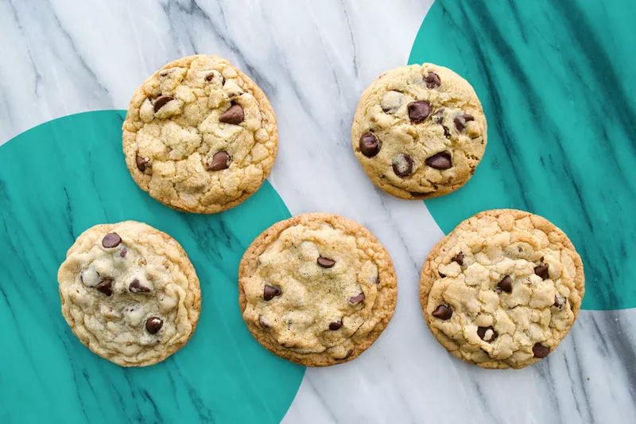

Chocolate Chip Cookies

Description
Today's recipe will be soft chocolate chip cookies which will just make your mouth melt. This is a simple recipe that anyone
can make on their own by following the simple steps!
Ingredients
- 4 cups of flour
- 2 teaspoons of baking soda
- 2 cups of butter
- 2 cups of sugar
- 2 instant vanilla pudding package mixes
- 4 eggs
- 2 teaspoons of vanilla extract
- 4 cups of chocolate chips
Steps
- Preheat oven at 350 degrees F
- Mix flour and baking soda, and cream together butter and sugar, beating in the pudding mix. Stir in vanilla and eggs.
- Add the flour mixture to the butter mixture and fold.
- Drop cookies onto cookie sheets.
- Bake in batches for 10-12 minutes each.